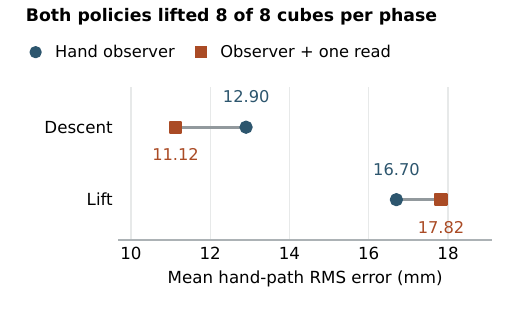
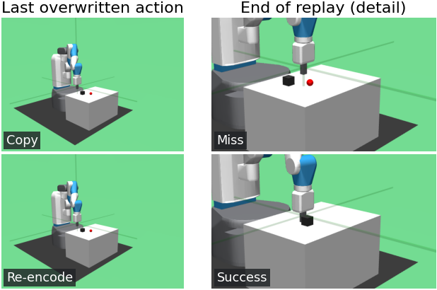

IEEE ROBOTICS AND AUTOMATION LETTERS · MANUSCRIPT · 2026
When does controller target readback help replay?
A cross-embodiment study separates target-writing error from physical tracking error. It tests whether
hand measurements and command history recover the replay before a hidden controller target must be read.
The sender may write the wrong Cartesian target, or the robot may track a correct target imperfectly.
RA-L holds the observer and perturbation protocol fixed while varying access to the hidden controller
target.
DIAGNOSISWHERE
Separate target-writing error from tracking error.
Measurements before and after each command reconstruct the target relative to the hand. The diagnostic
asks whether a direct controller read supplies information that the observer cannot already infer.
DECISIONWHEN
Read only when the observer leaves an ambiguity.
Event-triggered reads are compared with direct copying, fixed schedules, and hand-based reconstruction
across Fetch, Sawyer, and Panda replay conditions.
One observer, multiple information paths, one replay outcomeSimulation evidence · no real-robot claim
02 / MEASURED EVIDENCE
Measure the hand, reconstruct the target, then decide whether to read.
The main RA-L cohort keeps the observer fixed and reports both trajectory error and native terminal
outcomes across three robot embodiments.
RA-L / ERROR DIAGNOSIS
Hand feedback often resolves the replay before a target read is needed.
0 / 144terminal outcomes changed by 123 reads
The study compares direct command history, hand-based reconstruction, event-triggered readback, and
fixed schedules across Fetch, Sawyer, and Panda. The central comparison keeps the observer fixed while
varying access to the hidden controller target.
Hand observer140 / 144
Event reads on observer140 / 144
Mean hand RMS reduction0.039 mm
Paired 95% CI[0.012, 0.068] mm
Boundary. The guarantee is local to a delivered write and the evidence is simulation-based.
It does not establish hard real-time behavior or a universal readback schedule.
Hidden controller origin and replay correction.

Reconstruction and readback across Fetch, Sawyer, and Panda.Confirmation cohort with matched terminal outcomes.

RA-L / FETCH
Measured-reference re-encoding rescues the Fetch replay without a target read.
Fetch pick-and-place · direct copy after a five-step drop · failure.
Fetch push · measured-reference replay with hand feedback · success.
Fetch push · direct copy after a five-step drop · failure.
03 / COMPLEX TABLETOP EXTENSION
Can error diagnosis survive a cluttered tabletop?
These two clips are supplementary stress tests for occlusion, movable objects, and physical contact. They
are separate from the 144-condition RA-L cohort.
SCOPE
The seven-object online clip changes what an external camera can see while keeping the wrist view and
proprioception fixed. The cross-task replay isolates movable-object contact across LIBERO-Goal tasks.
SIMULATION · SUPPLEMENTARY
ONLINE · SEVEN OBJECTS
External-camera occlusionLIBERO Spatial bowl placement · juice carton visible or hidden to the external camera · exploratory OpenVLA-OFT comparison
FIXED TAPE · CROSS TASK
Movable clutter across tasksDrawer, stove, and container-placement demonstrations with six movable objects · human actions replayed at 20 Hz
Reading boundary. These clips motivate a future matched study that measures target and tracking
error under clutter. They do not add a new RA-L statistic or algorithmic claim.